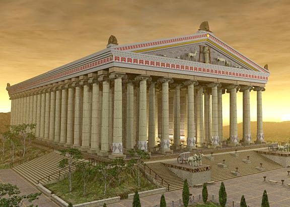

Храм богини Артемиды — одно из крупнейших и самых величественных сооружений Древней Греции. Находился в городе Эфес на территории современной Турции. Посвящён богине охоты, плодородия и женственности Артемиде.
Храм перестраивался трижды. Третья версия, ставшая чудом света, была создана архитектором Херсифроном и его сыном Метагеном. Храм окружали 127 ионических колонн высотой 18 метров, каждая из которых была украшена рельефами.
Храм был сожжён Геростратом в 356 году до н.э. (в ту же ночь, по легенде, родился Александр Македонский). Герострат сделал это ради славы, желая, чтобы его имя запомнилось в веках. Позднее храм был восстановлен, но окончательно разрушен готами в 262 году нашей эры.
Сегодня от храма остались лишь фрагменты колонн и фундамента. Часть скульптур и рельефов была вывезена в Британский музей, где их можно увидеть и сегодня. Раскопки продолжаются, открывая новые детали этого величественного сооружения.